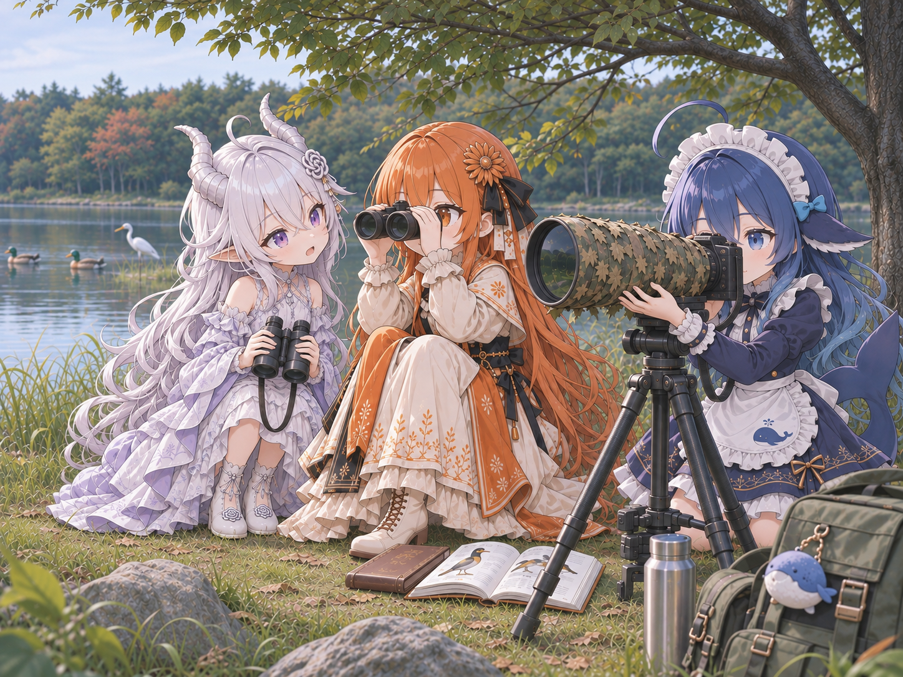
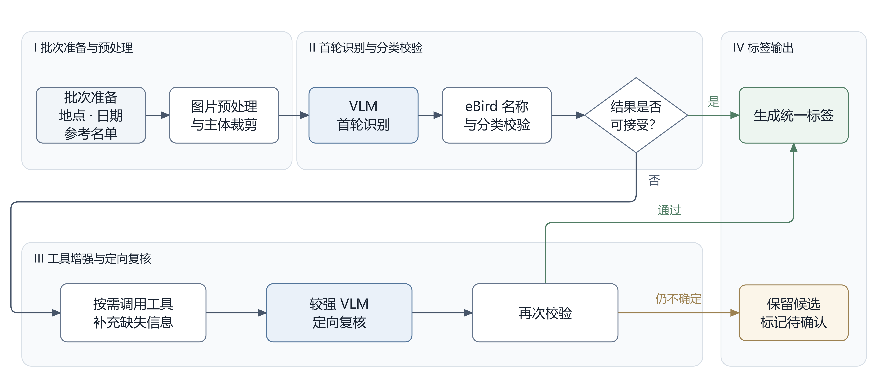
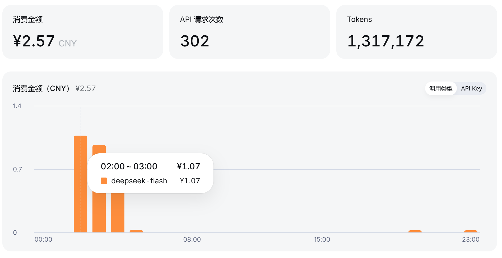
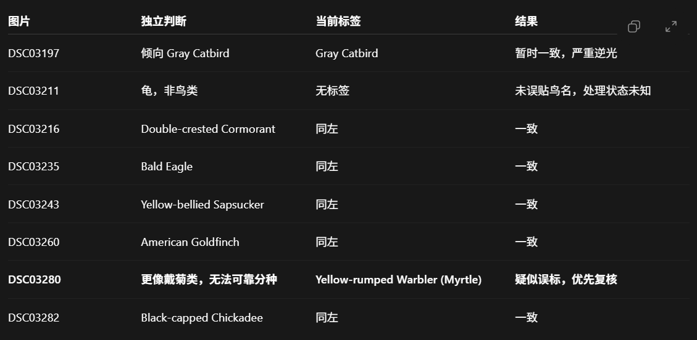
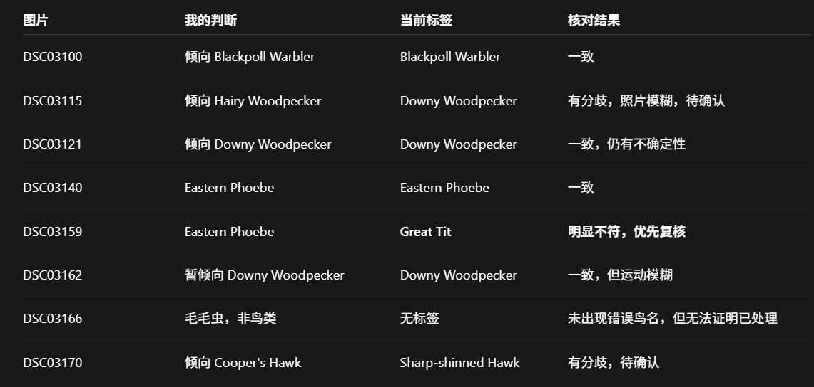
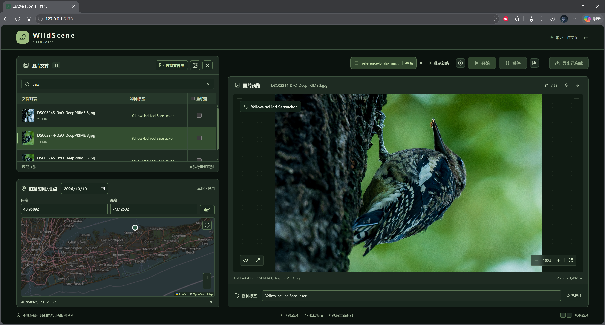
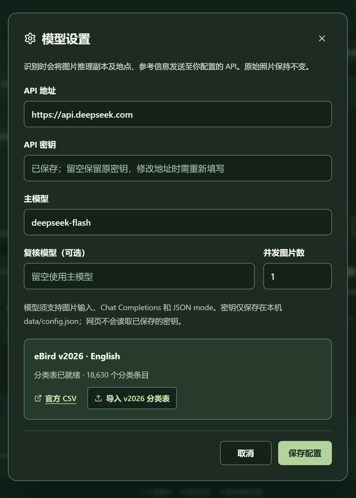
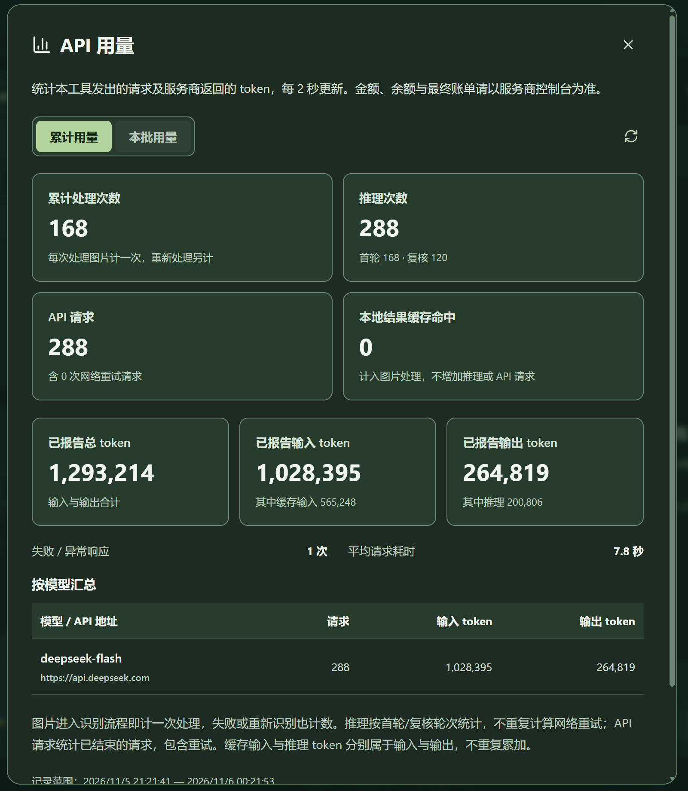
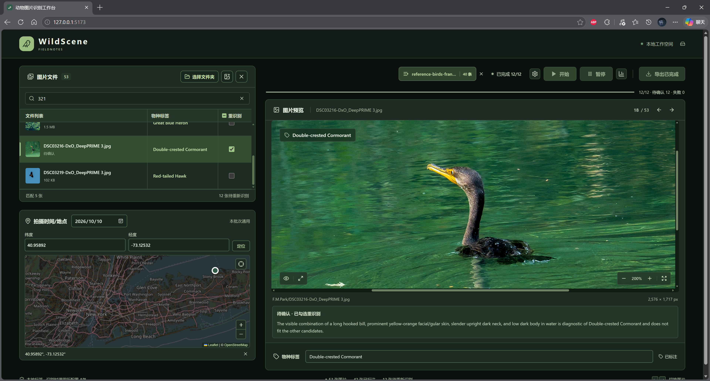
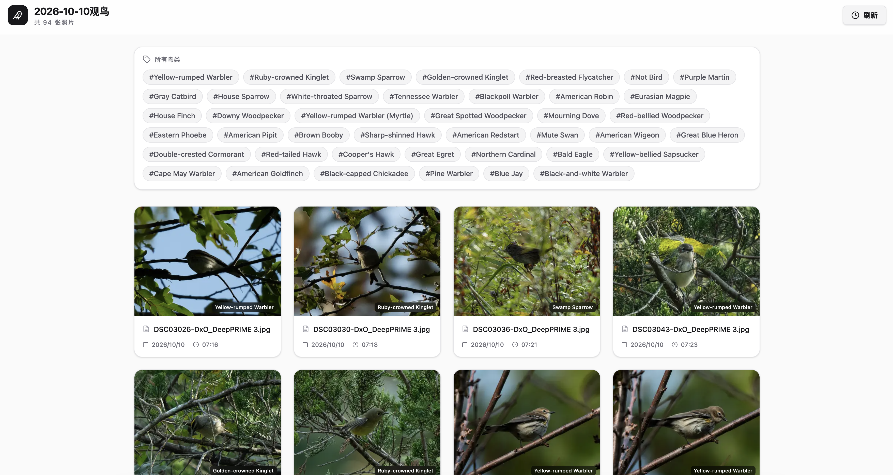

WildScene - 鸟类识别Agent
· Marconi · 编写中


作者: Marconi
感谢ChatGPT的帮助
项目简介
我经常带着相机到公园或者野外拍摄野生动物，其中主要是各种鸟类。有些鸟类在看到的时候就可以认出来，但有些鸟类当场认不出来，或者存在一些可能的细微差别，需要拍下来之后辨认。
现有很多鸟类识别工具都是在线单张识别，而且大部分都没法告诉你这些识别模型是如何确认图片中鸟种的。LLM和推理框架使得视觉语言模型VLM变得更加聪明，如果给予视觉语言模型足够好用的工具和充分的信息，效果将大大优于现有的各种鸟类识别引擎。
本项目实际上是一个本地运行的批量鸟类图片识别WebUI，其核心是一个VLM的Harness。优势包括：
- 支持大批量处理，并且可以存储和复用处理结果
- 支持各种VLM API，可以选择强大的闭源模型，也可以自己本地运行VLM接入，给予了较高的时间花费、成本花费和安全性的可控性
- 加入了多种工具（图片裁切、锐化、曝光调节等）和推理手段，让VLM更准确地识别图片
- 支持展示推理过程和重复识别，同时缓存机制使得准确性可以随着使用次数的增加而上升
目前包含功能：
- 导入单独的照片或者照片文件夹，在WebUI内进行预览
- 调用VLM API进行鸟类识别
- 可以填入拍摄地点、时间、参考列表让识别更加准确
- 如果对识别结果有误，可以勾选重新识别并展示推理过程，重新识别可以选择接入另一个VLM的API
- 标签保存到照片目录，不会因为清理缓存而被删除，同时支持用户自己编辑标签

使用两个地点分别50张图片进行测试，接入DeepSeek-V4.1-Flash-1017的官方API，在高峰期运行程序，平均一张照片10s，100张照片一共160次调用花费2.3元

在之前使用DeepSeek-V4.1-Flash-1017的测试中，第一轮正确率70%，对不确定的图片再次进行识别之后第二轮正确率达到95%


目前仅支持鸟类，首版固定使用 eBird v2026 官方英文名，如果识别结果不是鸟类，程序会添加标签
Not Bird目前暂不支持中文名转换，因为测试数据来自北美，很多鸟类没有准确的中文名
识别完成的图片支持直接导入项目Marconik/ImageWall: Provide a network frame for online image viewing进行展示
使用方法
可直接下载 GitHub Release 的预构建附件，按 首次部署指南 安装，Windows 依次运行
install.cmd和start.cmd以下是对源码版本的构建方式。
需要 Node.js 24 LTS及支持文件夹读写的桌面 Edge / Chrome
npm install
npm run taxonomy:install
npm run dev
打开 http://127.0.0.1:5173。程序会同时启动网页前端（5173）与后端（5174），均只监听本机

-
点击工具栏齿轮“模型设置”，填写 API 地址、密钥及视觉模型 ID。可选配置复核模型，并发默认 4，可设1~8

-
接入API之后，在暂停键右边的统计按钮可以看到模型的用量信息，其中本批次用量是指按下一次开始键直到自动结束这段时间的用量信息

-
在之前的模型窗口，正确载入鸟类命名规则之后应该显示“eBird v2026 · 分类表已就绪”。安装器下载 Cornell 官方固定版本的 eBird Taxonomy CSV，目前只下载2026年版；下载被拦截时，用浏览器下载官方 eBird Taxonomy v2026 CSV，在设置窗口导入；或运行
npm run taxonomy:install -- "C:\path\eBird_Taxonomy_v2026-october-2026.csv"。本地文件名须包含v2026，校验必需列及至少 10,000 个物种。CSV 没有可靠的内嵌版本声明，须选择正确的官方版本 -
选择图片所在文件夹并允许读写，在“拍摄时间/地点”设置日期与经纬度。如果没有设置日期或者地点，后端程序会自动调用照片元数据里的拍摄时间和GPS信息。为保证安全性，程序没有加入获取用户当前定位的功能
-
如果在观鸟的同时已经有记录鸟种，可以把记录到的鸟种直接编辑成.txt文件或者.csv表格，导入到参考列表里，供VLM精确锁定候选物种
-
识别完成的图片会显示标签和推理过程（推理过程仅保存于浏览器缓存之中，只能在下一轮推理之前查看），对结果有异议可以勾选重新识别。首个版本下的结果宽松度很低，所以一轮下来会有很大一部分图片被标记为需要重新识别。建议保留首轮识别勾选的所有需要重新识别的图片，在重新识别之后取消勾选所有仍然标记为需要重新识别的图片

-
识别完成的标签存储为相同文件夹下的
tags.json，如果使用我之前构建的ImageWall相册项目，可以直接把整个照片文件夹链接给相册的后端
后续计划
除了优化现有的一些功能的参数以外，还将实现：
- 照片的导出功能，导出包含时间地点元数据、标签水印的照片
- 鸟类名字的中文参考
- 推理过程的质疑功能：用户可以给被勾选重新识别的照片添加质疑或者引导
- 图片参考功能：添加参考图片库，可能会以网络API的形式实现
- VLM模型强化：现有的项目同时可以拿来强化训练VLM模型。预计使用小型蒸馏得到的开源VLM进行训练，训练出来的模型可以作为本地部署该Harness的最佳选项